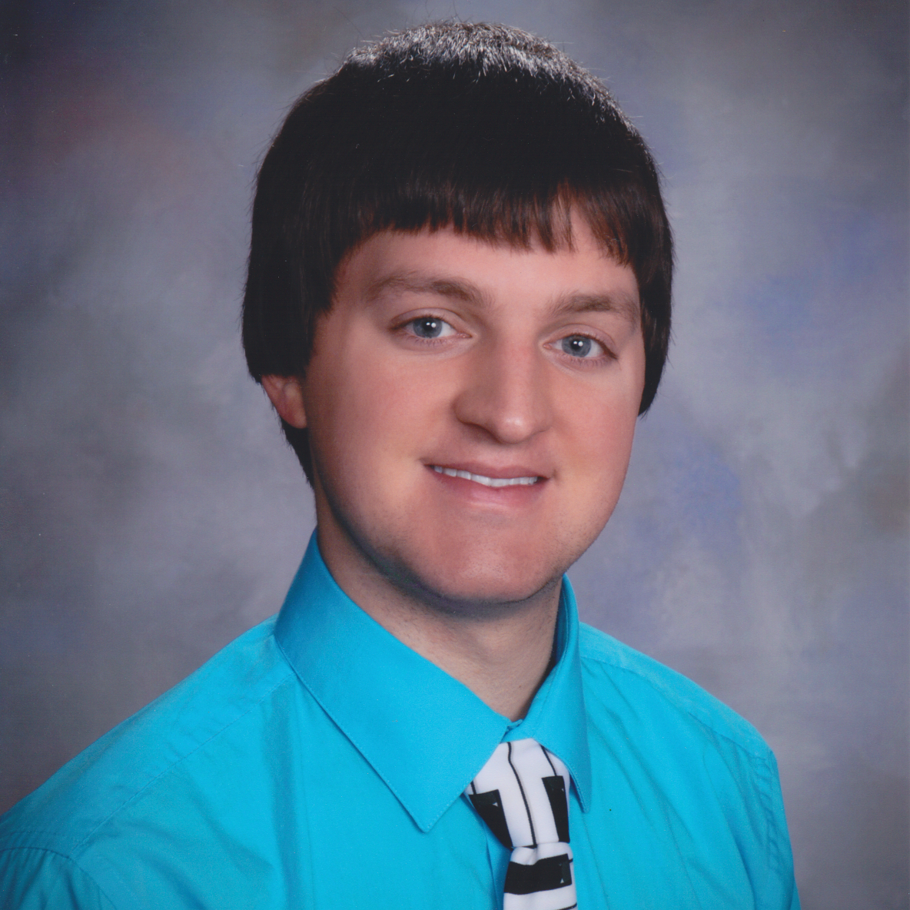

About Viewshed Viewer
About Us
Welcome to our Viewshed Viewer!
This tool is designed to allow users to view the area visible to any webcam.
On our home page, you can navigate the map to see the viewsheds of our current webcams or search for webcams by location or name.
Please click on a webcam icon to see more information about that webcam.
If available, you will also be able to see the Google Streetview at that location by clicking on the Streetview icon in the navigation bar.
You may also use the viewshed calculator on the home page to calculate temporary viewsheds.
If you would like to add your own webcams to our site, please create an account and fill out the add webcam form.
Please be aware that all webcams added or edited must be approved by an administrator before they will appear on the webcams' map.
 |
Karissa Jelonek
Frontend
I was responsible for all frontend
functionality outside of the main page. This
includes the user's list of webcams, forms
to add/edit/delete webcams (complete with
input validation and optional/required
fields), admin tools for managing users and
their webcams (complete with search
functionality), and a "contact us" form.
|
|  |
Schyler Kelsch
Team Leader, Database
I was responsible for designing the database
that would be used for this project. This
included writing a database script to create
tables, defining proper constraints
(primary/foreign keys and checks for a range
of correct values), inserting default values
(or null) where appropriate, and auto
incrementing values where appropriate.
I also took on team leader responsibilities.
This involved coordinating development plans,
keeping project documents up-to-date, and
being the liason between the team and our user.
|
 |
Michael O'Donnell
Backend
I was responsible for all backend
functionality of this project. I wrote most
of the servlets that interface the frontend
with the web server, the classes
that interface the web server with the
database, and the logic for the search bar on
the main page. I also heavily assisted
frontend developers with complex JavaScript
calculations, and wrote the classes that
can automatically fetch webcams from
external APIs (although as of this team's
development cycle, this is not being
implemented, we left this for future
developers to possibly use).
|
|
Mason Wu
Frontend
I was responsible for all of the frontend
functionality on the main page, along with
general graphic design for the whole project.
This included the SceneView of the Esri map,
displaying viewsheds on click, displaying
viewsheds for webcams already in the database,
incorporating webcam parameters such as
azimuth, height above ground, and field of
view into the viewshed calculation, screen
widgets for viewshed calculations and Google
StreetView, and a cohesive design language
across the entire project.
|